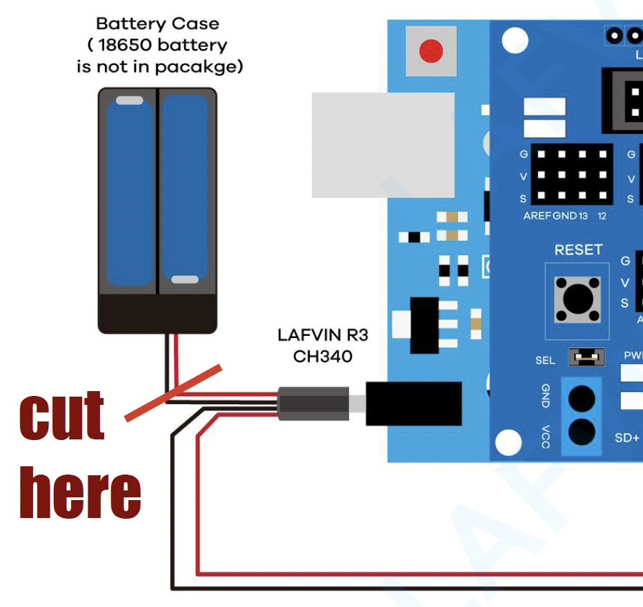

Assembly
1 Mechanical Assembly
It’s easiest to connect everything to the top and bottom plates first, then add the wires, and finally connect top and bottom plates together. That means you’ll skip ahead to the wiring after page 19, then come back to page 20 to finish the assembly.
When you assemble the 4 motors (manual pages 3-7), make sure half have the red wire closer to the threads in the bracket (like page 3), and the other half have the black wire closer to the threads (like page 4).
At first, only give a screw a turn or two instead of tightening it all the way. Then, once you’ve put all the screws into the part, tighten them all the way. Fully tightening a screw can make it difficult to line up the remaining screws.
You’ll often see screws with pointy tips, especially when using wood or plastic; these create their own thread as you screw them in. However, the kit uses machine screws, which have flat tips that screw into a matching thread in a nut or other metal part.
Because these screws aren’t meant to create a thread, it can be a little tricky to get them started. Try first screwing counter-clockwise (“lefty-loosey”) until you feel a little click from the threads aligning; then, proceed to screw them in clockwise (“righty-tighty”).
2 Wiring
2.1 Dupont connectors
Most of the electrical connections in the kit use Dupont connectors, which are plastic housings that hold a single wire. Originally, the wires will be all stuck together in a ribbon cable, but you can peel one or more wires off (like string cheese) to use them separately.
To make a connection, simply slide the plastic connector onto the metal pin of the component you want to connect to. The connector works on friction, so it may take a little force to get it on.
2.2 Screw terminals
Unlike the other electrical connections in the kit, the motor and power connectors of the driver board use screw terminals. To connect a wire, you first loosen the screw (counter-clockwise), insert the wire into the hole that has opened up on the side, and then tighten the screw until it is snug, clamping the wire in place.

oomlout, CC BY-SA 2.0, via Wikimedia Commons
{kind=link}

oomlout, CC BY-SA 2.0, via Wikimedia Commons
{kind=link}
2.3 Soldering
We’ll use a different battery holder than the one from the kit, so we’ll need to splice the wires together.

- Cut the battery holder’s wires as shown

- Strip the ends of the wires you just cut
- Slide a piece of heat-shrink tubing over each one of the wires
- Connect the new battery holder by twisting its wires to the existing wires—red to red, black to black
- Solder the wires together
- Put a little bit of solder on the tip of the iron to help it transfer heat
- Heat the wire with the soldering iron, wait a couple seconds then touch the solder to the wire until it melts and flows into the connection
- Remove the soldering iron and let the connection cool
- Slide the heat-shrink tubing over the soldered connection
Forgot to put the heat-shrink tubing on before soldering? No problem! You can use electrical tape from your kit to insulate the connection instead. Just wrap it around the soldered joint until it’s well covered.
3 Manual
This copy of the manual is annotated to show parts you can skip, and to clarify some of the trickier steps.